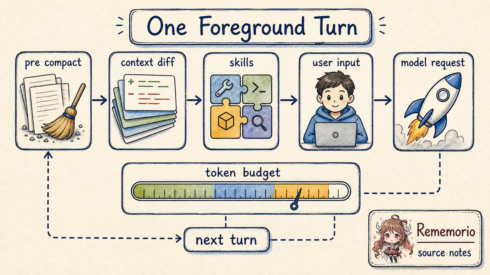
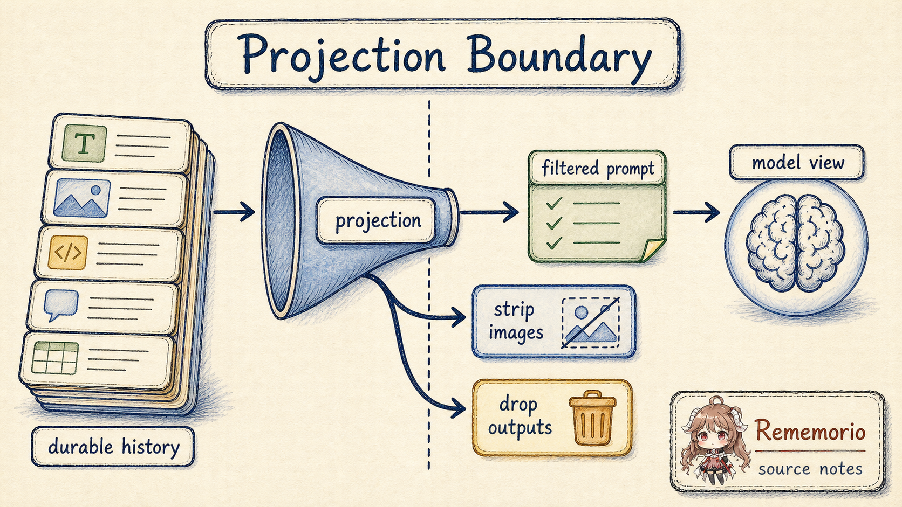
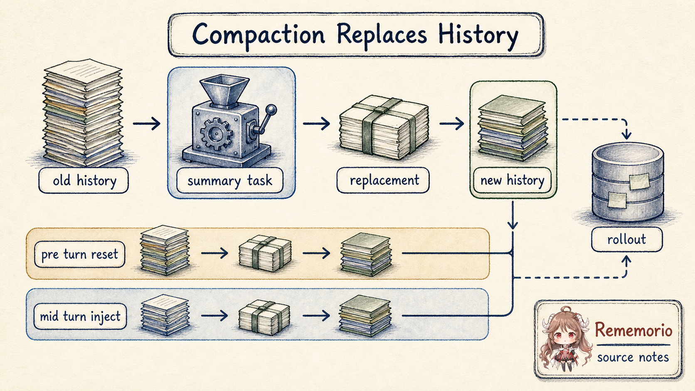

先从一个日常场景开始。你让 Codex 在一个仓库里修 bug。它读了 AGENTS.md，
搜了几个文件，跑了一次测试，测试失败后又看日志。中途你补了一句“别改生成文件”，
它又因为上下文接近窗口上限触发了一次 compact。第二天你恢复这个 thread，希望它还知道昨天做了什么。
如果把这件事理解成“消息数组越来越长”，很快就解释不通了。仓库规则、当前工作目录、sandbox 权限、 技能列表、工具 schema、工具输出、图片、推理 token、用户临时补充、压缩摘要、恢复基线，都不是同一种东西。 有些必须持久保存，有些只该在本轮给模型看，有些可以被截断，有些一旦丢掉就必须全量重注入。
先不看源码，先把三个词翻译成人话： thread 是一次可以恢复的工作会话； context window 是本次模型请求能容纳的上下文上限； compact 不是“删掉前文”，而是把旧账改写成一个可继续工作的摘要恢复点。
官方文档先给出外部契约：Codex 的 thread 是一次会话，包含 prompt、模型输出和工具调用； agent 工作时会继续从文件内容、工具输出和已完成工作中收集上下文；所有信息都必须放进模型的 context window，长任务可能自动 compact。源码要回答的是下一层问题：这些东西在运行时到底放在哪里， 什么时候进入模型，什么时候被摘要替换，恢复时又靠什么对齐？
证据边界。 本文把官方文档当作产品层契约，把 openai/codex 的公开源码当作机制证据。源码链接固定到同一公开快照。 当源码只暴露 remote compaction 的选择边界，而不暴露服务端摘要实现时，本文只描述可见生命周期， 不推断服务端内部算法。
这篇的阅读契约很简单：先分清 哪本账负责保存状态， 再分清 哪一部分会被投影给模型。只要这两件事清楚了， 后面的 diff、projection、compact 和 resume 都会落到同一条主线上。
所以这篇只追五个问题：
- Codex 持久保存的 history，为什么不能直接等同于模型看到的 prompt？
- 每一轮开始前，哪些上下文会全量注入，哪些只发 diff？
for_prompt()这一步到底规整和过滤了什么？- compact 发生时，Codex 替换的是哪本账，留下的恢复点是什么？
- rollback、resume 和模型切换为什么会影响下一轮上下文注入？
一、先把四个表面分开
读 Codex 上下文源码，第一步不是找一个叫“记忆模块”的地方。 真正需要先分开的，是同一个工作会话里四种不同的表面： session 级状态、turn 级快照、durable history，以及本次请求真正发给模型的 view。 它们看起来都叫“上下文”，但 owner 和生命周期完全不同。
回到开头修 bug 的例子：仓库规则和权限基线属于 session 和 turn； 你临时补的“别改生成文件”会进入当前 turn 的输入和 history； 测试日志、工具输出、模型回复属于 durable history； 而模型下一次实际看到的，是运行时从这些记录里整理出来的一份请求视图。 混在一起讲，就会把“保存过”误读成“这次一定发给模型”。
SessionState
是 session 级账本，持有 history: ContextManager、additional_context、
previous_turn_settings 和 auto_compact_window。
TurnContext
则是单轮快照：模型、cwd、日期、时区、开发者指令、用户指令、协作模式、权限、技能上下文、输出 schema 等都在这里。
它不是一条聊天消息，而是本轮运行环境的结构化描述。
| 表面 | 源码 owner | 模型是否直接看到 | 保护的不变量 |
|---|---|---|---|
| session 状态 | SessionState |
不会整体进入模型 | 跨 turn 保存 history、权限基线、压缩窗口和恢复状态。 |
| turn 快照 | TurnContext |
部分转成上下文消息或 request 字段 | 让本轮的模型、cwd、sandbox、日期、技能等配置有一个一致来源。 |
| durable history | ContextManager.items |
经过投影后才进入模型 | 保留可恢复的 API 消息、工具调用和压缩替换记录。 |
| model-visible prompt | for_prompt() + Prompt |
是本次请求 | 只给模型合法、适配当前模型能力、带工具 schema 的请求视图。 |
ContextManager
的注释说它是 thread history 的 transcript，但同一个结构里还有 history_version、
token_info 和 reference_context_item。最后这个字段很关键：
它是下一轮做 settings diff 的基线。
可以把它想成“上一轮环境的对照表”。如果上一轮权限是 workspace-write，
这一轮变成 read-only，有可信基线时只需要告诉模型“权限变了”；
如果基线丢了，Codex 就不再猜差异，而是全量重发当前环境。
baseline 不可信，就全量重注入。 这是后面 rollback、compact 和模型切换共同遵守的底线。
这就是本文的核心模型：Codex 的上下文不是一段不断变长的聊天记录， 而是一个 durable ledger。每一轮请求前，运行时从账本里取一个快照， 把它投影成当前模型能接受的 prompt；当账本太大时，再用 replacement history 写入新的恢复点。
| 后文叫法 | 它指什么 | 不要误读成 |
|---|---|---|
| durable history / ledger | 本地可恢复、可重放的历史账本。 | 模型每次完整看到的聊天记录。 |
| model-visible view / prompt | 本轮请求真正交给模型的投影视图。 | 内存里保存的全部状态。 |
| baseline / 基线 | 上一轮上下文快照，用来判断这轮只需发哪些 diff。 | 永远可信、永远能复用的缓存。 |
| replacement history | compact 之后安装的新 history。 | 贴在旧 history 旁边的一条摘要备注。 |
| projection / 投影 | 从 durable history 生成 model-visible view 的过滤和规整过程。 | 简单复制消息数组。 |
二、一轮 turn 不是从用户消息直接进模型
现在看一轮 turn。run_turn
进入后，第一件事不是记录新用户消息，而是先检查旧账是否已经太大。
compact 的内部细节放到第四节；这里只需要抓住一个顺序：
压缩检查发生在本轮新消息入账之前。
源码旁边的备注说明：当前 pre-turn compaction 发生在 context updates 和新用户消息被记录之前，
未来应该估算即将进入的上下文 diff 或全量重注入是否会把 thread 推过阈值。

之后 run_turn 调
record_context_updates_and_set_reference_context_item，
再构造 skills 和 plugins 注入项，运行 hooks，记录用户输入和注入项。真正进入模型请求前，
代码取的是 sess.clone_history().await.for_prompt(...)。
也就是说，进入模型的是一个从 durable history 克隆出来的请求视图。
turn starts
-> maybe compact old history
-> inject full context or settings diff
-> load skills/plugins chosen for this turn
-> record user input and additional context
-> clone history
-> for_prompt(input_modalities)
-> build Prompt with tools and base instructions
-> stream model response
这里还有一个容易忽略的细节。
用户可能在模型工具调用中途补一句话，模型也可能因为工具结果回来而继续上一次回答；
这两种输入如果插到同一个位置，模型看到的接续关系就会变。
源码注释
说明 ModelClientSession 是 turn-scoped，并且 pending input 不是任何时候都立刻 drain 到 history：
turn 开头要先让 fresh input 被采样；auto-compact 之后也要先让模型或工具 continuation 接上。
这不是 UI 细节，而是上下文顺序不变量。
2.1 初始上下文是运行时合成的，不是用户消息
full initial context 由
build_initial_context
合成。它把运行时环境整理成 developer 或 contextual user message。
这些信息不是一条用户聊天消息，而是本轮请求必须携带的边界条件。
| 来源 | 进入请求时的形态 | 为什么不能当普通用户消息 |
|---|---|---|
| 模型、权限、cwd、日期、时区 | developer 或 contextual user message，以及 request 字段。 | 它们定义本轮运行边界，优先级高于用户临时描述。 |
| 开发者指令、协作模式、personality、用户指令 | 合成进 initial context 的结构化文本。 | 恢复或切换模型时需要重新建立同一套行为基线。 |
| skills、plugins、apps instructions、token budget context | 按本轮可用能力和预算生成 model-visible context items。 | 它们由运行时选择，不是用户在对话里随手说的话。 |
这些信息来自运行时配置和环境，不是用户在 chat 里说的一句话。把它们当普通用户消息会让优先级和恢复语义都变乱。
Codex 的做法是把它们合成成 model-visible context items，并在当前 turn 的
TurnContextItem
里保存结构化基线。
2.2 稳态 turn 只发 diff，但 diff 有边界
record_context_updates_and_set_reference_context_item 的分支很直接：
如果 reference_context_item 缺失，就全量调用 build_initial_context；
否则只调 build_settings_update_items 生成 diff。
diff 当前覆盖环境变化、模型切换、权限变化、协作模式变化、realtime 和 personality。
if reference_context_item is None:
history += build_initial_context(turn_context)
else:
history += build_settings_update_items(previous, turn_context)
persist TurnContextItem for this real user turn
reference_context_item = current TurnContextItem
这一步保护的是 token 和语义稳定性：稳定配置不必每轮重复塞入 prompt，变化的配置又必须显式告诉模型。
但
build_settings_update_items
里也有一个重要备注：它还没有覆盖 build_initial_context 可能发出的所有 model-visible item。
这说明实现没有假装 diff 是万能的。只要基线不可靠，后续路径就会清掉 reference_context_item，
让下一轮回到全量重注入。
这一节要打掉的误读是：初始上下文不是每轮重复发，也不是永远只发 diff。 Codex 先看有没有可信 baseline；有就省 token 发变化，没有就牺牲 token 换语义正确。
三、history 到 prompt 中间有一次 projection
当 run_turn 准备采样请求时，它不会把 ContextManager.items 原封不动发出去。
for_prompt()
会先 normalize history，再返回当前模型可用的 ResponseItem 列表。
这里的 projection 指的就是这次转换：账本要完整，报表要合法。
ResponseItem 可以理解成模型请求里的消息、工具调用和工具输出单元。

normalize_history
目前明确做三件事：确保每个 function/custom call 有对应 output，移除没有对应 call 的 orphan output，
以及当模型不支持图片输入时，从消息和工具输出里 strip image content。
orphan output 就是只剩工具输出、找不到对应工具调用的半截记录；strip image content 则是把当前模型不能接收的图片内容从请求视图里拿掉。
这解释了为什么“history 里有图片”不等于“这次请求一定把图片发给模型”。
durable history, shape-level:
user text
function_call(call_id=A)
function_call_output(call_id=A)
orphan function_call_output(call_id=old)
user image
model-visible view for a text-only model:
user text
function_call(call_id=A)
function_call_output(call_id=A)
user text with image content stripped
同一层还有本地截断。
process_item
会按 truncation policy 处理 function output payload，避免单个工具输出把 history 撑爆。
而真正构造请求的
build_prompt
还会把工具 specs、parallel tool calls 支持、base instructions、personality 和 output schema 放进
Prompt。工具 schema 不是聊天消息，但它们仍然是模型可见请求的一部分。
3.1 token 账也是混合账
Codex 的 token 判断也不是单纯读服务端最后一次 usage。
get_total_token_usage
会在 last token usage 之外，加上最近一次模型生成之后本地追加的 items；如果服务端没有把历史 reasoning tokens 算入，
客户端还会估算非最后一段 reasoning item。这个数不是 tokenizer 精确计数，
估算函数
自己也说是 byte-based heuristic 和 coarse lower bound。
用一个形状级数字例子会更直观：服务端上次记下约 80k input tokens；
之后本地又追加了 8k 的工具输出和上下文更新；客户端再粗略估出 5k 历史 reasoning；
如果当前 auto-compact scope 是 BodyAfterPrefix，还要从 active 账里减去 20k 左右的 prefix baseline。
触发 compact 的不是某一个“权威数字”，而是这些账合成后和 scope limit、完整 context window limit 的关系。
这会影响 compact 触发。auto_compact_token_status
同时看 active context tokens、auto-compact scope tokens、scope limit 和完整 context window limit。
当 scope 是 BodyAfterPrefix 时，它会从 active tokens 里减去当前 auto-compact window 的 prefill baseline。
AutoCompactWindow
保存的就是这个窗口基线，且服务端观测到的 input tokens 会替换恢复时的估算值。
四、compact 不是删除历史，而是安装 replacement history
上下文窗口接近上限时，最容易被误解的词是 compact。它听起来像“把前文总结一下”， 但 Codex 源码里更像一次可恢复的 history rewrite：生成摘要、选择保留的近期用户消息、 写入 replacement history、更新 auto-compact window，再决定下一轮 initial context 的基线怎样处理。
本节最重要的一句话是：compact 改写的是 history，不是在旧 history 旁边贴一条摘要。 如果摘要不能成为恢复时可重放的新账本，它就只是省了一点 token，却没有解决长 thread 的继续工作问题。

4.1 触发点先分 pre-turn 和 mid-turn
先不要看 enum 名字，先看 compact 发生在一轮 turn 的哪个位置。 同样是“压缩旧账”，发生在用户新消息入账前，和发生在模型已经工作到一半时，恢复策略是不一样的。
| 触发位置 | 用户新消息是否已入账 | initial context 放哪里 | 为什么 |
|---|---|---|---|
| pre-turn / 手动 compact | 还没有进入这轮 history。 | 不立刻注入，清空 baseline，下一轮全量重注入。 | 旧账已经要被替换，新 turn 还没开始，最稳的是让下一轮重新建立环境基线。 |
| mid-turn compact | 模型已经采样过，可能还要继续。 | 插到最后一个真实用户消息之前。 | 模型要把 summary 当作最后的接续点，initial context 不能盖到 summary 后面。 |
pre-turn 路径在
run_pre_sampling_compact：
先处理上一个模型的 inline compaction，再检查 token status。如果已经到阈值，就调用
run_auto_compact(..., InitialContextInjection::DoNotInject, ...)。
还有两个额外原因会在 pre-turn 触发：compaction compatibility hash 变化，或者切换到更小 context window 的模型。
mid-turn 路径发生在模型已经采样过、但还需要 follow-up 的时候。
采样后的状态收集
会同时看模型是否需要继续、pending input 是否存在、token limit 是否达到。
如果需要继续且 token limit reached，就用
InitialContextInjection::BeforeLastUserMessage 做 compact，然后继续循环。
这个 enum 的注释直接给出了设计理由。
InitialContextInjection
说明 pre-turn 和手动 compact 用 DoNotInject，会清空 reference_context_item，
下一次普通 turn 再全量重注入。mid-turn compact 则必须把 initial context 插到最后一个真实用户消息之前，
因为模型被训练成在 mid-turn compaction 后看到 summary 作为 history 里的最后一项。
4.2 摘要是一个 handoff summary，不是随意短句
local inline compaction 的入口是
run_inline_auto_compact_task。
它把 turn_context.compact_prompt() 合成为一个用户输入。默认 prompt 来自
compact prompt 模板：
要为另一个将继续任务的 LLM 写 handoff summary，包含当前进度、关键决策、约束、剩余步骤和关键数据。
run_compact_task_inner_impl
的可见流程可以拆成六步。这样看会比一个长句更接近真实运行时的手感：
| 步骤 | 发生了什么 | 保护的边界 |
|---|---|---|
| 1 | 克隆当前 history。 | compact 请求可以读旧账，但不先破坏主会话。 |
| 2 | 把 compact prompt 追加到这次请求的本地 history。 | 摘要任务有明确目标，不是随意压缩。 |
| 3 | 调用模型直到 completed，并取最后一个 assistant message 作为 summary suffix。 | 只把最终 handoff summary 装进新账。 |
| 4 | 收集近期真实用户消息，和 summary 一起构造 replacement history。 | 保留最近用户意图，同时承认旧中间过程已经有损。 |
| 5 | 推进 auto-compact window id。 | 后续 token 判断知道自己已经换过窗口。 |
| 6 | 调用 replace_compacted_history 安装新 history，并重新估算 token usage。 |
内存状态和后续恢复记录对齐。 |
old history:
initial context
user A
model/tool work
user B
model/tool work
replacement history, shape-level:
recent real user messages, capped
user message: SUMMARY_PREFIX + handoff summary
构造 replacement history 的
build_compacted_history
会从后往前保留真实用户消息，最多约 20,000 tokens，然后把 summary 作为 user message 放到最后。
如果是 mid-turn compact，insert_initial_context_before_last_real_user_or_summary
会把当前 canonical initial context 插到模型期望的边界：优先放在最后一个真实用户消息前；没有真实用户消息时，
放在 summary 或 compaction item 前，保证 compaction item 仍然留在最后。
4.3 replacement 还要写入 rollout
这里先给 rollout 一个位置：它是恢复 thread 时可以重放的持久事件记录，
不等于当前内存里的 history。
compact 不只改内存。replace_compacted_history
会替换 SessionState.history，持久化 RolloutItem::Compacted，
如果这次 compact 重新建立了 reference_context_item，还会持久化一个 RolloutItem::TurnContext。
之后它排队一个 session start hook，并由调用方重算 token usage。
这一步把 compact 从“临时省 token”升级成“可恢复的历史重写”。后面 resume 或 fork 需要重建 thread 时，
它看到的不是旧 history 加一条备注，而是带 replacement_history 的 compacted 记录。
Codex 还会在 compact 完成后发出 warning：长 thread 和多次 compaction 会让模型准确性下降，能新开 thread 时应该保持任务小而聚焦。
所以“compact 只是摘要一下”这个说法不够准确。 更准确的说法是：compact 生成 handoff summary，并把它安装成可恢复的 replacement history。
五、rollback 和 resume 会主动打断错误基线
如果只有向前追加，reference_context_item 很好维护。难点在 rollback、resume、compact 和新窗口之后。
这些路径都可能让历史里剩下的上下文片段和当前基线不再匹配。Codex 的策略不是继续拿旧基线 diff，
而是在不确定时清空基线，让下一轮全量重注入。
5.1 rollback 为什么要清 baseline
想象你让 Codex 回滚最近两轮。用户消息可以删，模型回复和工具输出可以删， 但 turn 边界附近还可能粘着一段 context update：比如当时注入的 cwd、权限、开发者指令片段。 如果这些片段的一部分被剪掉，旧 baseline 还继续说“我知道上一轮环境是什么”，下一轮 diff 就会建立在一段已经不存在的历史上。
drop_last_n_user_turns
做 rollback 时，会从切点往前修剪紧贴 turn 边界的 context update items。
如果被修剪的是一个混合的 build_initial_context developer bundle，里面既有可回滚的 contextual fragments，
又有持久 developer text，trim 逻辑
会清空 reference_context_item。原因很朴素：幸存 history 已经不包含建立旧基线的完整 bundle，
后面不能再基于它发 diff。
rollback 的关键不是“删掉几条消息”，而是：一旦建立 baseline 的 bundle 不完整， 下一轮就不能再沿着旧 baseline 发 diff。
5.2 resume 和新窗口如何重建 baseline
resume 面对的是另一个问题：内存已经没了，thread 要从持久记录里重新站起来。 这时 Codex 不能只恢复聊天记录，还要恢复 previous settings、reference context 和 compact window id； 否则恢复后的第一轮就不知道自己应该继续 diff，还是重新注入完整环境。
resume 路径也同样把 history、previous settings、reference context 和 window id 作为一组恢复。
apply_rollout_reconstruction
从 rollout 重建这些状态；如果当前 auto-compact scope 是 BodyAfterPrefix，
它还会估算 prefix tokens，作为恢复后的 compaction window baseline。
还有一种更像显式“新窗口”的路径：
maybe_start_new_context_window
在收到请求后推进 window id，用当前 build_initial_context 直接替换 history，
持久化一个空 message 的 CompactedItem 和新的 TurnContextItem。
这条路径强调的不是摘要，而是从新的 prefix baseline 重新开始。
到这里，四个核心不变量已经闭合： history 不是 prompt， baseline 不可信就全量重注入， compact 安装 replacement history， rollback/resume 会主动打断错误基线。
六、几个常见误读
读完这条链路，可以把常见误读压成一张表。它比“上下文管理很复杂”更有用，因为每一行都对应一个实际会出错的地方。
| 误读 | 源码里实际发生的事 | 如果按误读实现会怎样 |
|---|---|---|
| history 就是 prompt | ContextManager 保存 durable items，for_prompt() 再投影出请求视图。 |
orphan outputs、unsupported images 或错误 call/output 对会直接污染请求。 |
| 初始上下文每轮都重复发 | 有 baseline 时只发 settings diff；baseline 缺失或不可靠时才全量重注入。 | token 浪费，或者更糟，沿着已经失效的基线发错误 diff。 |
| compact 只是摘要一下 | compact 生成 handoff summary，并安装 replacement history，写入 rollout。 | 恢复时无法知道摘要替换了哪段 history，也无法重建上下文基线。 |
| token 账完全来自服务端 | Codex 会把服务端 usage、本地新增 items、reasoning 估算和 window baseline 合并判断。 | 本地追加的大工具输出或上下文 diff 可能把请求推过窗口却没被提前发现。 |
| rollback 只删用户消息 | Codex 还会修剪紧贴边界的 context updates，并在必要时清空 baseline。 | 下一轮可能基于已经不存在的 initial context bundle 继续发 diff。 |
七、可以带走的运行时规则
这篇源码阅读最后可以收成几条更一般的 agent runtime 规则。
| 状态类型 | 应该放在哪里 | 进入模型前要做什么 | 保护的不变量 |
|---|---|---|---|
| 真实对话和工具证据 | durable history / rollout | 按模型能力投影，保持 call/output 成对。 | 恢复和审计时有证据链。 |
| 运行环境和权限 | turn context + reference baseline | 首次全量注入，后续只发可信 diff。 | 模型知道当前边界，且不会被旧配置误导。 |
| 工具能力 | tool router / prompt request | 通过 model-visible specs 暴露，不伪装成聊天历史。 | 工具 schema 与 runtime 执行面一致。 |
| 长线程压缩结果 | replacement history + compacted rollout item | 把摘要作为恢复用 handoff，必要时插回 initial context。 | 长任务可继续，但承认压缩是有损的。 |
| token 窗口状态 | token_info + auto_compact_window | 用服务端 usage 和本地估算共同判断。 | 避免只看一侧账导致过窗。 |
这也是为什么 Codex 的上下文管理值得单独写成系列第一篇。工具调用、权限系统、多 agent、 skills 和插件，后面都会回到同一个问题：运行时必须先决定哪本账有权保存状态， 再决定哪一部分应该被投影给模型。没有这层上下文纪律，agent 越强，越容易把自己之前做过的事搅成一团。
参考源码与文档
- openai/codex 固定源码快照
- Codex 官方文档总览
- AGENTS.md 官方文档
- Codex skills 官方文档
- SessionState 字段
- TurnContext 定义
- ContextManager 字段
- run_turn 入口顺序
- build_initial_context
- record_context_updates_and_set_reference_context_item
- normalize_history
- auto_compact_token_status
- run_compact_task_inner_impl
- 默认 compact prompt
- replace_compacted_history
- drop_last_n_user_turns